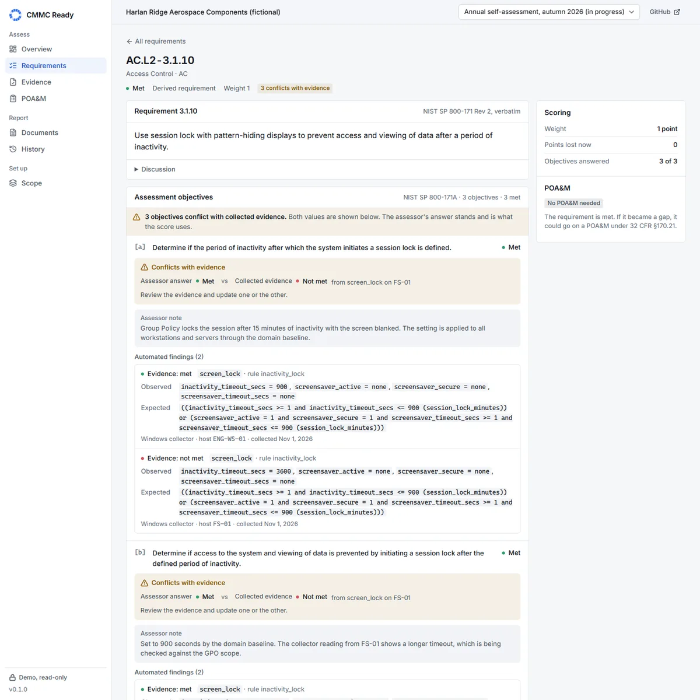
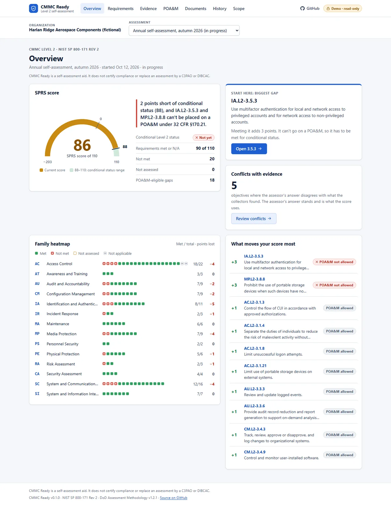
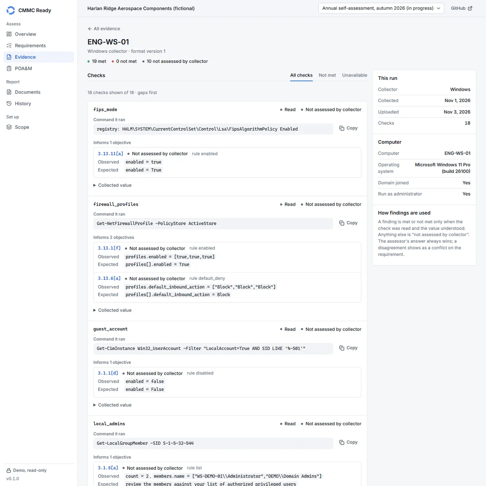

CMMC Ready
Summary
CMMC Ready is a CMMC Level 2 self-assessment workbench for small defense contractors. It walks an organization through all 110 requirements of NIST SP 800-171 Rev 2 and their 320 SP 800-171A assessment objectives, computes the SPRS score exactly as the DoD Assessment Methodology defines it, and checks the 32 CFR 170.21 rules for conditional Level 2 status and POA&M eligibility. Read-only PowerShell collectors pull evidence from Windows endpoints and Microsoft 365 / Entra ID to sit beside the assessor's answers, and when the evidence and the assessor disagree, it says so. It produces the System Security Plan, the POA&M and the SPRS summary as documents you can edit.
CMMC Ready is a self-assessment aid. It does not certify compliance or replace an assessment by a C3PAO or DIBCAC.
Problem
Defense contractors that handle Controlled Unclassified Information have to implement the 110 requirements of NIST SP 800-171 and self-score against the DoD Assessment Methodology. CMMC makes the result a condition of contract award: Phase 1 began on November 10, 2025, and under 32 CFR 170.3(e) Phase 2, when DoD intends to start requiring a Level 2 certification by a C3PAO in applicable solicitations, begins on November 10, 2026.
A small contractor usually tracks this in spreadsheets. The scoring has traps (weights of 5, 3 and 1, partial credit for MFA and FIPS cryptography, no score at all without a System Security Plan), the POA&M rules bar some gaps by name, and nothing ties an answer of "Met" to what the machines are actually configured to do. I wanted one tool that gets the arithmetic and the rules exactly right, shows its sources, and puts real configuration evidence next to every answer without ever overruling the assessor.
What I built
- A verified catalog. All 110 Rev 2 requirements and 320 objectives with their DoD weights, built by a script from NIST's CSV and the SP 800-171A PDF. A
catalog --checkcommand and the tests pin the counts and the total weight of 313. - Exact scoring. The SPRS score from 110 down to −203, partial credit for 3.5.3 (MFA) and 3.13.11 (FIPS), a provisional label while anything is unanswered or the SSP is missing, and the conditional Level 2 threshold of 88.
- The 32 CFR 170.21 POA&M rules. Only 1-point gaps may go on a POA&M, six requirements never may, and 3.13.11 may at −3. Eligible gaps become draft items due 180 days after the assessment; the rest are listed with the reason.
- Read-only collectors. A Windows script with 18 checks (
secedit /export,auditpol /get,Get-*cmdlets, CIM queries, registry reads) and a Microsoft 365 / Entra ID script with 6 checks that makes only Microsoft GraphGETrequests with four read-only scopes. They change nothing and handle no credentials, and each check records the exact command it ran. - Evidence beside the answer. 37 rules inform 37 of the 320 objectives. When a collector finding disagrees with the assessor, the objective is flagged "Conflicts with evidence" and both values are shown; the assessor's answer is what the score uses.
- Documents. The SSP and the POA&M as Word documents, the POA&M as CSV (spreadsheet formulas neutralized) and the SPRS summary as Markdown. Every export opens with the disclaimer.
- Hardening. PBKDF2-SHA256 password hashes, an httpOnly SameSite=Strict JWT cookie, per-IP login lockout, a fail-closed API, a read-only guest mode where every write returns 403, parameterized SQL with allow-listed filters, size and encoding checks on uploads, and a strict Content-Security-Policy.
How it works
- Scope and parameters. The organization, CAGE codes, CUI boundary and assets go into the SSP. Organization-defined parameters such as minimum password length, lockout threshold and session lock time feed the collector rules, and changing one re-evaluates every stored finding.
- Collect. The scripts write JSON that is uploaded and validated (size, UTF-8, line length, format version). A rules file evaluates each check with three-valued logic, so anything unreadable stays Not assessed instead of passing or failing. Where one host or tenant setting cannot prove an organization-wide objective, it is recorded as supporting evidence only.
- Answer and score. The assessor marks each objective Met, Not met or N/A (with a justification). A requirement is Met only when every objective is Met or N/A. The score and status are always derived from the answers, never stored, and unanswered requirements count at full weight so an unfinished assessment never looks better than it is.
- Plan, export and track. Gaps become POA&M items with owners and milestones, the documents are generated on download, and the History page compares assessments over time.
| Rule | Value | Source |
|---|---|---|
| Weights | 5 (44 requirements), 3 (14), 1 (51); 3.12.4 has no value | DoD Assessment Methodology §5(d), Annex A |
| Score range | 110 down to −203 | Derived from weights totalling 313 |
| Conditional Level 2 status | Score ÷ 110 ≥ 0.8, so at least 88 | 32 CFR 170.21 |
| POA&M closeout | Within 180 days | 32 CFR 170.21 |

Evidence
The demo loads a fictional contractor with two assessments: a provisional score of 41 in June 2026, then 86 in the autumn, two points short of conditional status, with 3.5.3 and 3.8.8 blocking it because neither may go on a POA&M.
401 tests (369 backend with pytest, 32 frontend with node:test) cover the catalog against the published counts and weights, every scoring rule including the six requirements barred from a POA&M, both collectors against compliant, non-compliant and unreadable synthetic output, conflicts, the exports and their disclaimer, every API endpoint, guest mode on every write route, SQL injection payloads on every parameter, upload validation and authentication. CI runs the tests, the catalog and coverage checks, the frontend tests and build, pip-audit, npm audit and a gitleaks scan, and runs the Windows collector for real on GitHub's windows-latest runner under both PowerShell 7 and Windows PowerShell 5.1, then parses its output.


What I'd do next
- A live tenant run. The Microsoft 365 collector follows the Graph v1.0 documentation and is tested against synthetic responses, but has not yet been run against a real tenant.
- More collectors. Linux, Intune device compliance and Google Workspace, and several tenants and sites in one assessment.
- Accountability. Per-user accounts with an answer history and an audit log of who changed what, plus encryption of the database at rest.
- Localization. Audit-policy parsing understands English output only today; on other display languages it fails safe and leaves the objective Not assessed.